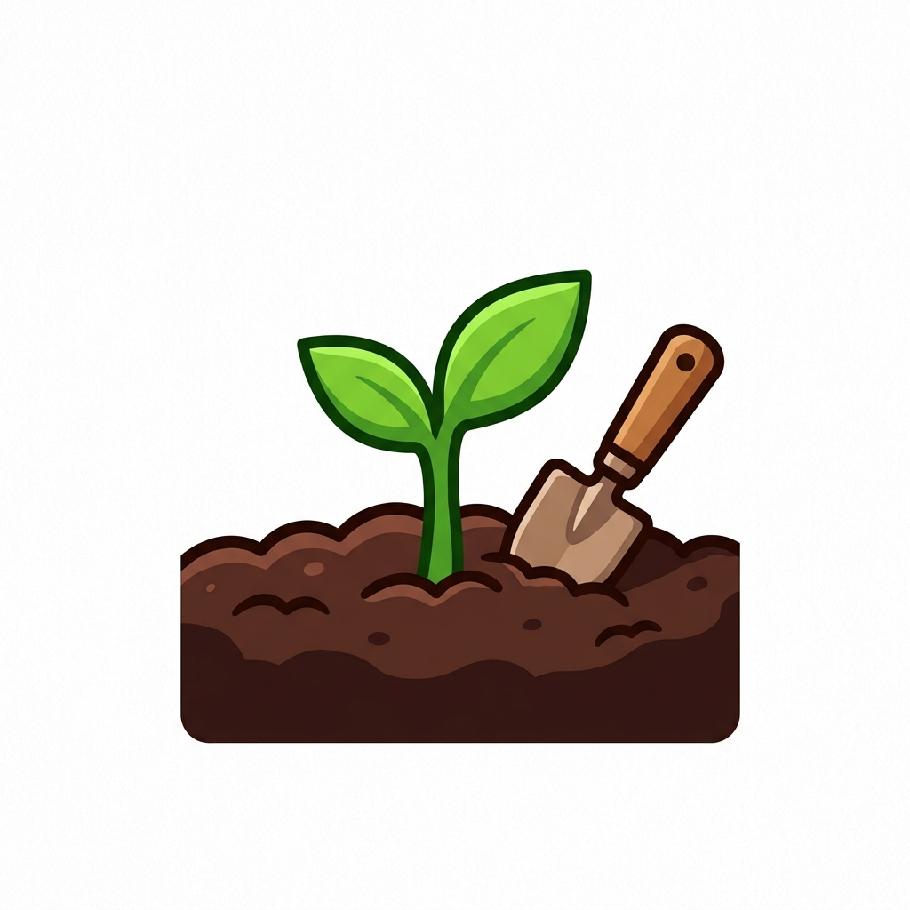

Boas-vindas à nossa horta!
Por: Kesia Kamily de Oliveira Costa
Iniciamos o projeto da horta comunitária da nossa turma no Colégio CQC! Aqui vamos registrar todo o processo de cultivo, desde a preparação do solo até a colheita.
Acompanhe o cultivo, aprendizados e novidades do projeto da nossa turma!

Por: Kesia Kamily de Oliveira Costa
Iniciamos o projeto da horta comunitária da nossa turma no Colégio CQC! Aqui vamos registrar todo o processo de cultivo, desde a preparação do solo até a colheita.

Por: Kesia Kamily de Oliveira Costa
As sementes de alface que plantamos semana passada já começaram a germinar! É impressionante ver como o cuidado diário e a rega correta fazem a diferença.
Fonte: Diário de Campo da Turma

Por: Kesia Kamily de Oliveira Costa
Aprendemos em aula a produzir adubo usando restos de alimentos orgânicos da cantina da escola. Além de nutrir a terra, ajudamos a reduzir o lixo!
Fonte: Aula de Biologia CQC

Por: Kesia Kamily de Oliveira Costa
Montamos um sistema simples de captação de água da chuva para regar nosso canteiro. A sustentabilidade precisa estar presente em todos os passos.
Fonte: Projeto de Ciências

Por: Kesia Kamily de Oliveira Costa
Reservamos um espaço especial para temperos como manjericão, salsa e cebolinha. Além de cheirosos, eles ajudam a afastar pragas das outras plantas de forma natural.
Fonte: Guia da Horta Escolar

Por: Kesia Kamily de Oliveira Costa
Nossas hortaliças estão quase prontas para serem colhidas! Planejamos compartilhar os alimentos com a comunidade escolar e preparar uma receita especial com a turma.
Fonte: Projeto Horta CQC